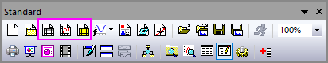
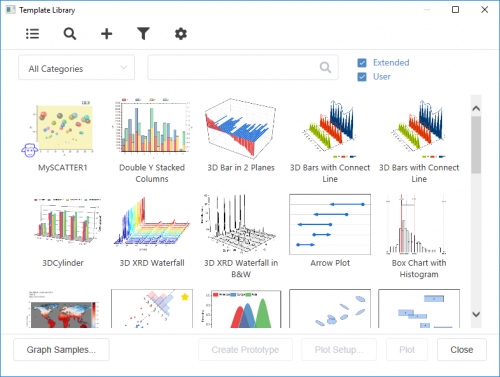
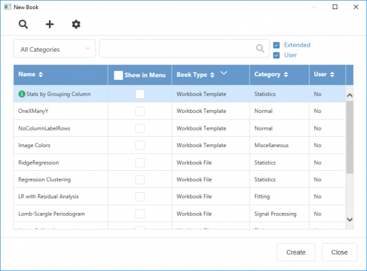
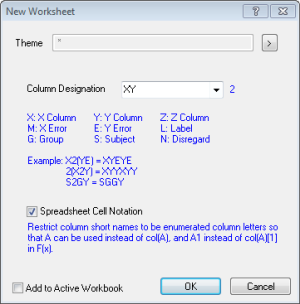
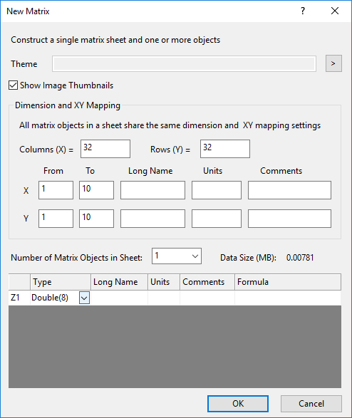

Unterfenster aus Vorlagen
Create-ChildWindow
Wenn Sie eine neue Arbeitsmappe, eine neue Grafik oder eine neue Matrixmappe erstellen, benutzt Origin eine Vorlage zum Erzeugen des neuen Fensters. Vordefinierte Eigenschaften, die mit der Vorlage gespeichert wurden, werden benutzt, um verschiedene Fensterformate und Datenverarbeitungseigenschaften zu setzen. Beachten Sie, dass Daten nicht mit einer Vorlage gespeichert werden.
Ein neues Fenster mit Hilfe der Schaltflächen der Symbolleiste Standard erstellen
Die einfachste und praktischste Möglichkeit, ein neues Fenster für Arbeitsmappe, Grafik oder Matrixmappe zu erstellen, besteht in einem Klick auf eine der Schaltflächen der Symbolleiste Standard.

Diese Schaltflächen öffnen jeweils ein Fenster, das auf einer der Origin-Vorlagen basiert: ORIGIN.OTWU (Arbeitsblatt), ORIGIN.OTPU (Grafik) oder ORIGIN.OTMU (Matrix).
Ein Diagrammfenster mittels einer Diagrammvorlage erstellen
Mittels einer Systemvorlage
Im Allgemeinen können Sie mit einigen in einer Arbeitsmappe oder Matrix ausgewählten Daten ein Diagrammfenster erstellen, indem Sie einmal auf die Schaltflächen der Symbolleisten 2D-Grafiken und 3D- und Konturdiagrammen klicken.
Alle unterstützten Systemdiagrammvorlagen sind über das Menü Zeichnen verfügbar. Sie können einfach die Quelldaten markieren und aktivieren und den gewünschten Diagrammtyp auswählen, um das Diagramm zu zeichnen.
Mittels Anwender- oder Erweiterter Vorlagen
Seit Origin 2021b wurden einige Erweiterte Diagrammvorlagen als Ergänzungen zu den Systemvorlagen hinzugefügt. Sie werden in der Vorlagenbibliothek aufgeführt und verwaltet, wo Sie auch die Anwendervorlagen gespeichert haben, um sie wiederzuverwenden.

Wählen Sie mit ausgewählten Quelldaten Zeichnen: mit Template, um die Vorlagenbibliothek zu öffnen. Klicken Sie in diesem Dialog auf die gewünschte Vorlage und dann auf die Schaltfläche Zeichnung, um das Diagramm zu erstellen.
Eine neue Mappe mit dem Dialog Neue Mappe erstellen
Seit Origin 2021b wird der Dialog Neue Arbeitsmappe geöffnet, wenn Sie im Hauptmenü Datei: Neu: Arbeitsmappe/Matrix: Durchsuchen auswählen.

Wenn dieser Dialog geöffnet wurde, können Sie jede gelistete Mappe auswählen und auf Erstellen klicken, um eine neue Arbeits- oder Matrixmappe zu erzeugen.
Bitte beachten Sie, dass alle Anwender- und erweiterten Vorlagen (Analysevorlagen, Arbeits-/Matrixmappenvorlagen und Arbeitsmappen-/Matrixdateien) hier aufgelistet wurden. Sie können eine Anwendervorlage in diesem Dialog scannen, hinzufügen, modifizieren und entfernen.
Eine Arbeitsmappe oder Matrixmappe erzeugen
Mit dem Dialog Neue Arbeitsmappe
Sie können über den Dialog Neue Datentabelle ein neues leeres Arbeitsblatt erstellen.
- Klicken Sie auf Datei: Neu: Arbeitsblatt: Neue Datentabelle im Hauptmenü von Origin.
- Wählen Sie Freiform-Arbeitsblatt in der Auswahlliste Tabellentyp.

- Dieser Dialog erstellt ein neues Arbeitsblatt mit Hilfe der Standardarbeitsmappenvorlage ORIGIN.OTWU (als Schaltfläche Neues Arbeitsblatt auf der Standardsymbolleiste), aber lässt das Hinzufügen von Spalten und Spaltenzuordnungen nebenbei.
- Verwenden Sie das Feld Spaltenzuordnung setzen, um mehrere Diagrammzuordnungen der Spalten festzulegen. Wählen Sie entweder eine Spaltenzuordnung aus der Liste oder geben Sie eine benutzerdefinierte Zuordnung im Feld ein. Lesen Sie auf dieser Seite weitere Informationen, wie die Spaltenzuordnung benutzerdefiniert angepasst werden kann.
- Das neu erstellte Blatt verfügt standardmäßig über die einfache Zellennotation. Der Spaltenkurzname wird auf nummerierte Spaltenbuchstaben beschränkt, so dass A anstatt col(A) und A1 anstatt col(A)[1] in F(x) verwendet werden kann.
 | Im Fall von anderen Tabellentypen (XY, Spalte, Gruppiert, Kontingenz, Lebensdauer) lesen Sie bitte den Abschnitt zur Datentabelle.
Der Dialog Neue Matrix
Ähnlich der Symbolleistenschaltfläche Neue Matrix  öffnet der Dialog Neue Matrix ein Fenster, das auf der Matrixmappenvorlage Origin.otmu basiert. Wie bei der neuen Arbeitsmappe haben Sie die Option, einige direkte Anpassungen vorzunehmen (z. B. Anzahl der Zeilen oder Spalten, Matrixobjekte hinzufügen etc.). öffnet der Dialog Neue Matrix ein Fenster, das auf der Matrixmappenvorlage Origin.otmu basiert. Wie bei der neuen Arbeitsmappe haben Sie die Option, einige direkte Anpassungen vorzunehmen (z. B. Anzahl der Zeilen oder Spalten, Matrixobjekte hinzufügen etc.).
- Klicken Sie auf Datei: Neu: Matrix: Erzeugen....
Legen Sie fest, ob Miniaturbilder in den neuen Matrixblättern angezeigt werden.
- Dimension und XY-Abbildung
Bestimmen Sie die Anzahl der Spalten (X) und Zeilen (Y), die X/Y-Abbildungsanordnung und die X/Y-Beschriftungen (Langname, Einheiten, Kommentare) für ein neues Matrixblatt.
- Anzahl der Matrixobjekte im Blatt
Wählen Sie die Anzahl der Matrixobjekte im Blatt. Bestimmen Sie den Datentyp, die Beschriftungen und Formel für jedes Matrixobjekt im Gitternetz. Um einen Wert auf alle Zellen in einer Spalte anzuwenden, klicken Sie mit der rechten Maustaste und wählen Sie dann Auf alle anwenden.

|